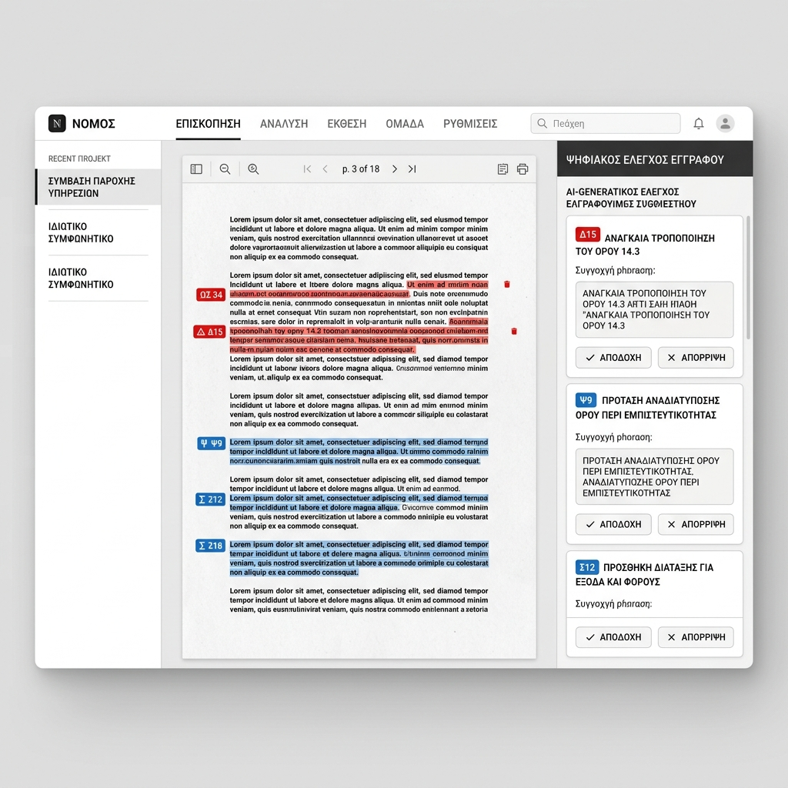

AGRI TECH / IoT
「土の乾き」が、
「土の乾き」が、
あなたのスマホに通知される。
AGRI-SENSORは、農地に刺すだけの安価なIoTセンサー群とAIを組み合わせ、土壌水分量、日射量、病害虫のリスクをリアルタイムで可視化する次世代の精密農業OSです。

THE PHYSICAL LIMIT
「見て回る」という膨大な時間の浪費
広大な農地。毎朝すべての畑を回って土の状態を確認する過酷な見回り作業が、農家の体力を奪い、規模拡大を阻む最大の要因です。
SOIL INTELLIGENCE
土の「声」をデータ化するセンサー
${f.t}
${f.d}
${f.t}
${f.d}
${f.t}
${f.d}
SATELLITE MAPPING
衛星画像による「生育ムラ」の可視化
人工衛星やドローンによる画像解析を活用。畑の中で「肥料が足りていない部分」をヒートマップで可視化しピンポイントの追肥を可能にします。
YIELD PREDICTION
収量予測とアグリ・ファイナンス
「いつ、どれくらい収穫できるか」をAIが予測し、市場の価格データと掛け合わせ最も利益が出るタイミングを提案します。
FARM EXPANSION
Case Study | 北海道の小麦農家
見回りだけで半日が終わっていた農家。導入後、iPad一つで監視可能になり、管理面積を1.5倍に拡大。収量も15%向上しました。
OUR VISION
自然とテクノロジーの調和
自然の微細な変化を正確に読み取り、持続可能な食の未来を根元から支えます。